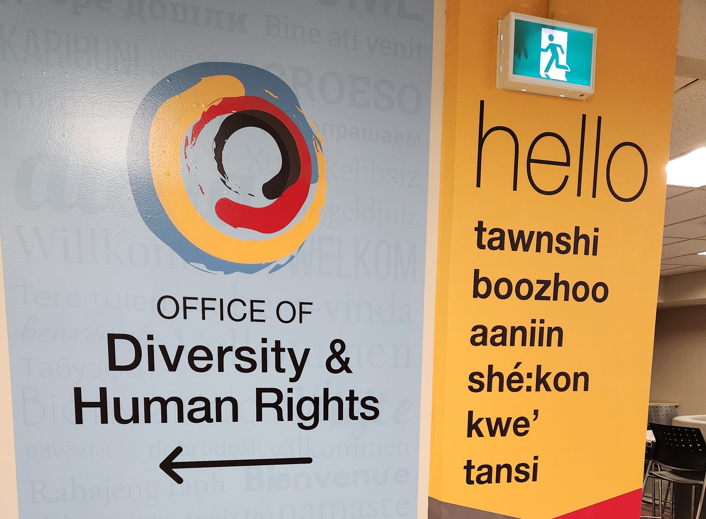

Office of Diversity and Human Rights (DHR) - Work Term Report Summer 2024
Welcome to my website! My name is Mohammad Sameer and I'm a 3rd year Software Engineering student at the University of Guelph. This blog will shed light on my 4 month co-op work term as a Research Strategy Co-op Student at the University of Guelph.
About the Office of Diversity and Human Rights
The Diversity and Human Rights Department at the University of Guelph works to promote an inclusive and equitable environment on campus. They address human rights issues such as discrimination and harassment, ensure compliance with relevant laws and policies, and support marginalized communities by advocating for accessibility and accommodations. The department also provides education and training on diversity, unconscious bias, and equity, while offering mediation services to resolve conflicts related to human rights concerns. Overall, they aim to foster a welcoming and respectful campus for all.
Fun Facts
- The University of Guelph ranked 53rd on the Forbes Canada's Best Employers for Diversity list
- The Office of Diversity and Human Rights is located on the 3rd floor in the UC
Job Description - Research and Strategy Co-op Student
As a Research and Strategy Co-op Student, I got to work on a handful of different things. I designined and prototyped the Diversity and Human Rights website using Figma to ensure a user-friendly interface. The DHR Office planned to migrate their website from Drupal to the Content Hub so this would help give the developers a clear vision to how to build the website. The DHR Office also recieves different types of requests from different departments on campus. Some of these requests including training requests, accessibility accommodations, and human rights complaints. I used Python and the pandas library to organize and visualize the data of these requests. The graphs were later put into a report to send to the President to make a case to get more resources allocated to the department. The graphs showed how the demand of our services have gone up over time but we haven't grown in terms of resources. I also did research on other university human rights offices to see what they're doing and pull certain practices that can help our office.
Goals
Improve UI Design Skills
I got to strengthen my UI desgin skills over the course of this co-op work term. Redesigning the DHR website forced me to go outside of my comfort zone and try new things. I leanred a lot of new UI design concepts and learned how to implement them in a real world project. This also helped me communicate with stakeholders to gather requirements for the website.
Learned to Work With Real Datasets
I got to work with real datasets to analyze and visualize. It opened my eyes to the possibilties of analytics and the conclusions you can come up with if done correctly. It was very insightful to see different trends and correlations that I wouldn't have seen if it weren't visualized.
Learned to Communicate With Stakeholders
When I was redesigning the website, I had to gather requirements from diverse stakeholders. I learned how to ask meaningful questions that would help me better understand what they want out of the website. This also helped me to collect more qualitative data rather than quantitative data. I was able to capture a user story to better articulate what the website could look like.
Conclusion
This co-op experience introduced me to a professional working enviorment and working with people with diverse experiences and backgrounds. I also found out how much the DHR office is involved on campus even if their work isn't noticed by a lot of students and faculty. It was nice seeing how much they care about the student and faculty on campus. I'm thrilled that I was able to contribute to the betterment of the University of Guelph even if it was just a small part. I honed my technical skills and improved my soft skills during this co-op term. These skills will help me move forward in my career because these are all transferable skills in the tech industry.
Acknowledgments
Working with such an incredible team throughout my co-op term with the Office of Diversity and Human Rights was an incredible experience. I'd like to thank my supervisor, Meghan Sinclair for being so supportive and genuinely making me feel part of the team from day one. I'd also like to thank my co-op counsellors Kate McRoberts, Laura Gatto and Anne-Marie Zawadzki for all of their support and advice throughout the whole co-op process.